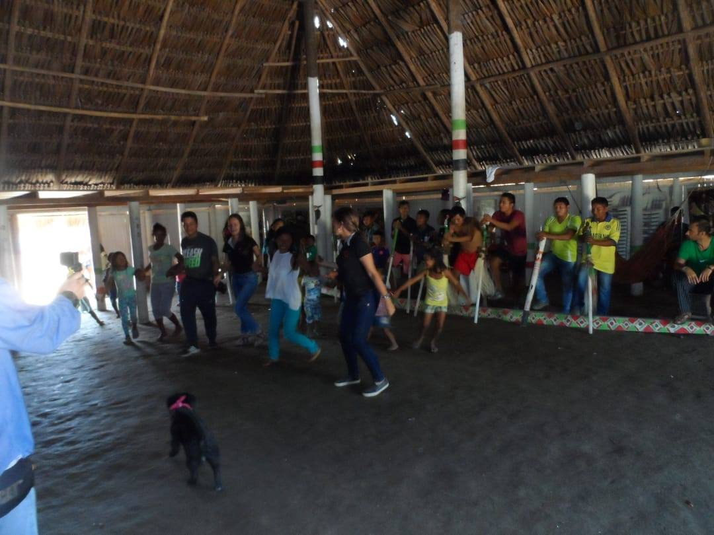
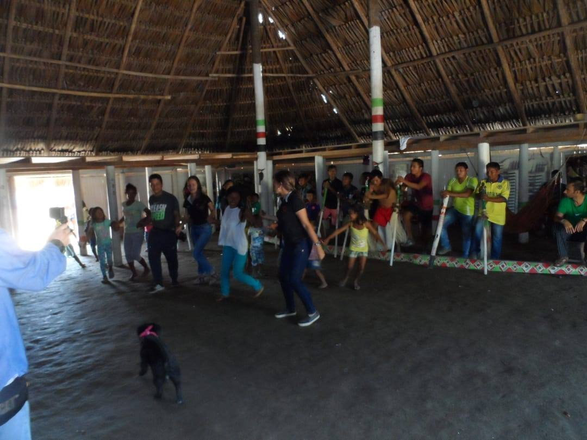

Sindi Ortega.
Estudiante de ingeniería electrónica.
Grupo de Afinidad no abierto oficialmente, sin embargo, se destaca el trabajo realizado por los voluntarios interesados en el grupo, en el apoyo de eventos y actividades, que buscaban estimular el gusto por las ciencias y la tecnología a estudiantes de básica primaria y secundaria; el taller realizado por la Escuela Tecnológica Instituto Técnico Central -ETITC en la iglesia del barrio San Carlos, con aproximadamente 120 niños del sector del Pinilla, es el mejor ejemplo de apoyo colaborativo por parte del grupo de afinidad WIE.
Cabe resaltar además que el grupo de voluntarios conmemoraron por primera vez en la historia de la rama IEEE Unillanos y de la Universidad de los Llanos, el Día Internacional de la Mujer en la Ingeniería- DIMI; evento que logró reunir estudiantes, profesionales (entre ellas egresadas) de diversas ingenierías, facultades y universidades de la región, logrando que cada una compartiera sus sueños, posturas y experiencias como mujer en la ingeniería.
Evento destacado:
IEEE Special Interest Group on Humanitarian Technology (SIGHT) - Unillanos
Líder:
Angela Quiñonez.
Estudiante de ingeniería electrónica.
Grupo oficialmente no abierto. En 2017 la rama IEEE Unillanos participó en la convocatoria de retos humanitarios de SIGHT Colombia, abanderados por el liderazgo de Angela Quiñones, el reto se convirtuió en esa llevaron a cabo ocasión realizaron la bla bla bla... hablar del papel de Angela y darle relavancia
 
